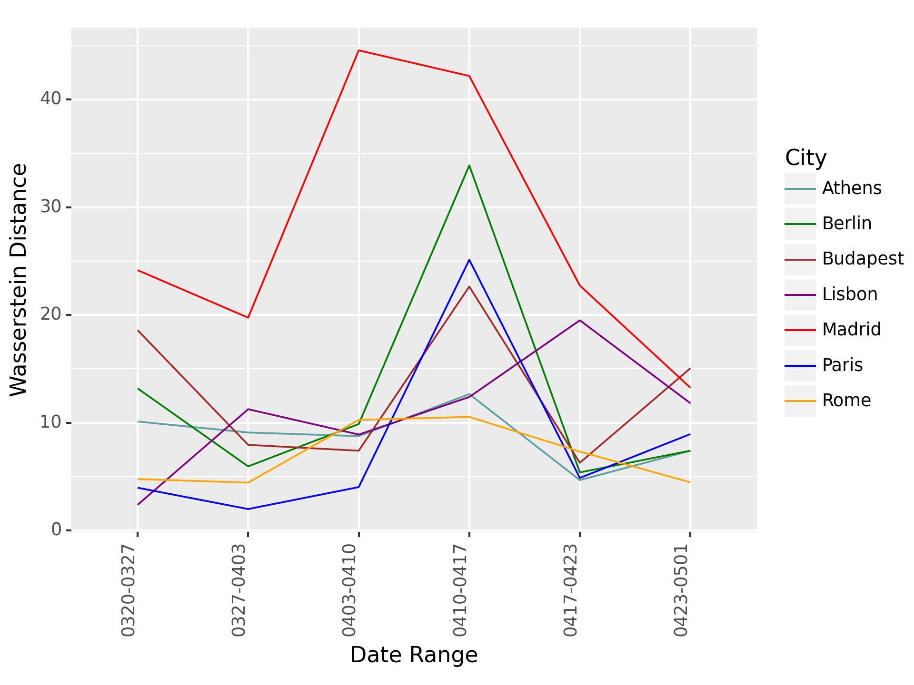
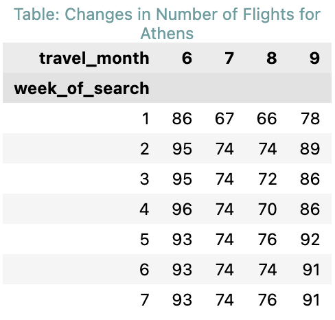
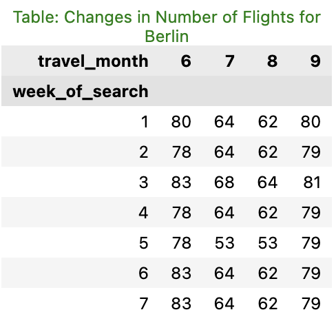
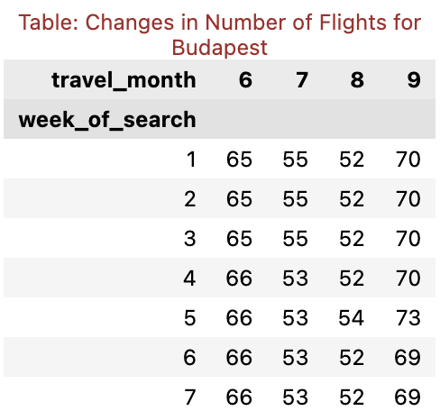
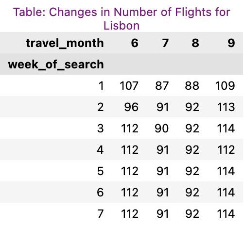
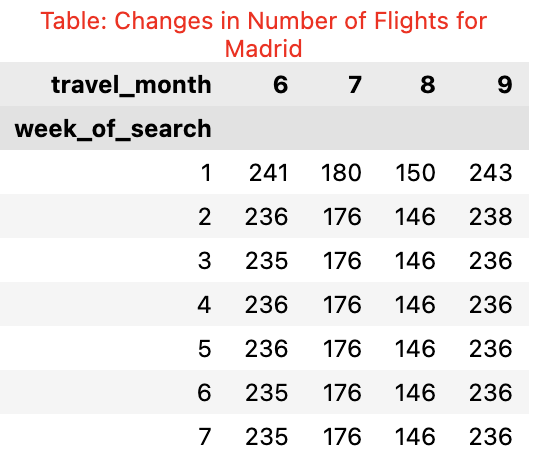
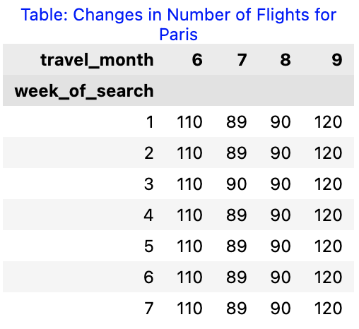
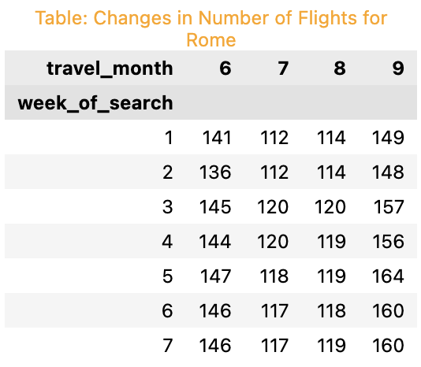

Time Window Analysis
Price changes
How the Price Distributions Change Over Time
From the dynamic graphs above we can see that, in terms of the distribution of prices across the seven time windows, there is a general trend of prices increasing in all cities. This is evidenced by the rise in the median and quartile values across successive weeks. However, there are notable differences in the degree of increase among cities. For instance, cities like Madrid and Budapest showed considerable increase in prices, while the price rise in Paris and Berlin was more modest.Regardless of these variations, Athens consistently had the highest prices across all time windows.
Wasserstein Distances1

The calculated Wasserstein distances reveal how the price distribution evolved over time. In general, most cities show a steady increase in the Wasserstein distances, implying a significant shift in the distribution of prices over the weeks. It is noteworthy that the distances spike notably in Paris, Berlin, and Madrid around mid-April, suggesting a dramatic change in price distribution during this period. The notable spikes observed in the Wasserstein distances for Paris, Berlin, and Madrid, cities relatively close to London, around mid-April could potentially be associated with the Easter holiday period. During this time, a surge in flight search volume is typically observed, possibly reflecting an increase in travel demand. Given their geographical proximity, travellers from London might prefer these cities as their holiday destinations, leading to an increased demand for flights to these destinations. This heightened demand could result in a sharp rise in flight ticket prices, resulting in significant shifts in price distributions, which might be the cause of the spikes observed in our analysis. Therefore, understanding the impact of seasonal holidays and considering related factors such as geographical location can provide us with a more comprehensive perspective on flight ticket pricing patterns.
Number of Flights changes
How the Number of Flights Over Time
| Athens | Berlin |
|---|---|
|  |  |
| Budapest | Lisbon |
|---|---|
|  |  |
| Madrid | Paris |
|---|---|
|  |  |
| Rome | |
|---|---|
|  |
Here are several pivot tables concluding the number of flights available for each month depending on which weekend you are searching. In general, there are more options as it comes closer to the date of flight for each city. On the other hand, Paris and Budapest have a consistent number of flights regardless of when you are searching for flight tickets.